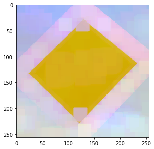
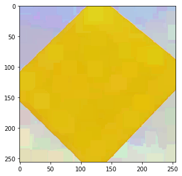

Filtering
This section goes into details on using PyDIP functions.
To find a function in the documentation, type T here (or click the search icon at the top of the page) to bring up a search dialog box. There you can search for functions, modules and pages by name. For example, typing “watershed” in the search box will point you to a series of functions related to the watershed.
The signature of functions are mostly the same in the Python package as they are in the C++ library. Most DIPlib types exist in PyDIP as well, but a few types are translated to Python types, see Type correspondences.
Most DIPlib functions have two function signatures, the documentation will always list only
one of them. The difference is the parameter called out, if it’s an image. There is a second
function signature where this parameter is left out, and the function returns the output image.
This alternative function signature is usually easier to use, and most example PyDIP code
will use it.
A simple example
Let’s look at that watershed example. First look at the documentation for dip::Watershed.
The function has three image arguments: in, mask and out. We can make out be the output
argument. An image called mask is always a binary image, and usually optional (even if the
documentation doesn’t say so explicitly as in this case). We can pass None to represent
“no image” (where in C++ you’d use a raw image).
So we can call it with:
img = dip.ImageRead('examples/cermet') out = dip.Watershed(img, None, maxDepth=40)
But None in this case is the default for the mask argument, so we can simplify further as
out = dip.Watershed(img, maxDepth=40)
The default values are always the same as they are in the documentation.
The out argument
Sometimes you want an operation to write its output in a pre-allocated buffer. This is when the
out input argument is useful:
out = dip.Image(img.Sizes(), 1, "BIN") dip.Watershed(img, out=out, maxDepth=40)
Here, dip.Watershed() can write its output in the existing out image, and will not reforge it
(reallocate its data segment) or change its properties.
But in principle it is not necessary to get the properties right. If the image passed for out
has the wrong sizes, number of tensor elements or data type, then it will be reforged to be
correct:
out = dip.Image((10, 20), 3, "SINT32") dip.Watershed(img, out=out, maxDepth=40) print(out) # will show how the image now is 256x256, scalar and binary
The protect flag
When a function is able to reforge the out image, it is not always clear why we should bother
with it. Can we ever be sure that the image will not be reforged? Yes! We can protect the
data segment, preventing the image from being reforged.
out = dip.Image((10, 20), 3, "SINT32") out.Protect() dip.Watershed(img, out=out, maxDepth=40) # raises an exception, because the result cannot be written into out
The protect flag is useful when an image encapsulates data from a different source, and we want to ensure we overwrite that data.
It is also useful to change the output data type of a filter.
For example, dip::Gauss will produce a single-precision floating-point image as output by default.
But we can force it to produce an output of a different type:
out = dip.Image() out.SetDataType('UINT8') out.Protect() dip.Gauss(img, out=out, sigmas=5)
Here, out was not forged (we never gave sizes, we only specified the data type). But by setting the
protect flag, we indicated to dip.Gauss() not to change its data type, forcing the function to
produce a 8-bit unsigned integer output.
Finally, the protect flag is useful to have a function work in-place. For example:
dip.Gauss(img, out=img, sigmas=5)
Without protecting img, dip.Gauss will reforge its output image, meaning that img is now
an 'SFLOAT' image, no longer a 'UINT8' as it was before calling the function. The filter didn’t work
in place, it reforged img after keeping a reference to the original data segment to be used as input
to the computation. But if we protect the image before applying the filter, this is no longer the case:
img.Protect() dip.Gauss(img, out=img, sigmas=5) img.Protect(False) # reset the protect flag
In this case, img is not reforged, and the filter works in-place. img still points to the same
data segment as it did before the filter was applied.
Note that some functions cannot work in-place. If they receive the same image as input and output, they will first copy the input data before doing the computations that write to the output. To the user it looks like the operation is working in-place, but in reality there’s a temporary copy being made.
Filtering color images
With some functions, like dip.Gauss(), we can process color images normally. However, many functions
require a scalar (gray-scale) image as input. This is mostly the case for functions where it doesn’t
make sense to work on color (for example dip.Watershed()), or where the operation is ambiguous on
color (for example dip.Dilation()). We’ll use this latter function as an example.
Let’s start with an example color image:
img = dip.ImageRead('examples/DIP.tif') img.Show()

If we try to apply a dilation to this image, we get an exception:
se = dip.SE(25, "rectangular") dip.Dilation(img, se=se) # raises exception with text "Image is not scalar"
The dilation computes a local maximum, and the maximum over a set of RGB values is not uniquely defined, there’s no unique, correct way to order colors (not in RGB space, not in any other color space).
One approach is to apply the dilation to each channel independently:
res = img.Similar() for ii in range(img.TensorElements()): dip.Dilation(img(ii), out=res(ii), se=se) res.Show()

This is called “marginal ordering”, and can introduce new colors into the image. The maximum of yellow, sky blue and black apparently is pinkish.
Another approach is to sort pixels on intensity only, or on some other property. Then the dilation picks
the pixel that has the largest value of this property. For example, we can determine the distance to
pure yellow, and sort pixels based on that value. dip::SelectionFilter is a dilation of sorts,
it picks pixels from one image based on the intensities of another (scalar) image:
select = -dip.Norm(img - [255, 255, 0]) # negate the distance, so that yellow gets larger values res = dip.SelectionFilter(img, select, kernel=dip.Kernel(25, "rectangular"), mode="maximum") res.Show()

Now we see that the yellow area has grown over the other colors, as one would expect for a dilation.